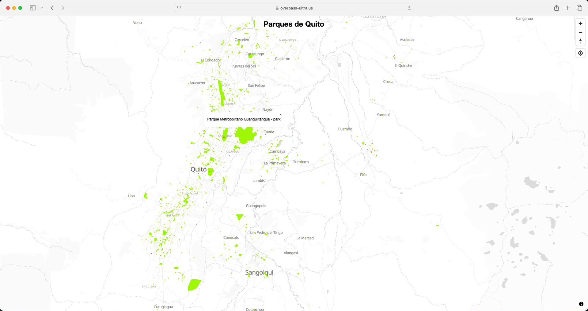

Acceso al tutorial
Resumen
Ultra es una aplicación web que te ayuda a crear mapas interactivos personalizados utilizando datos de OpenStreetMap. Este tutorial te muestra paso a paso cómo construir consultas (queries) de mapas, estilizar elementos del mapa con diferentes colores, añadir características interactivas como ventanas emergentes y controles de navegación, y compartir tus mapas terminados en línea. Utilizando un ejemplo práctico de mapeo de parques en Quito, enseña a los principiantes cómo transformar datos geográficos en mapas visualmente atractivos y útiles sin necesidad de habilidades técnicas avanzadas.
Mapa de ejemplo

Atribución
Overpass Ultra por
Felipe Valdez tiene una licencia
CC BY-NC-SA 4.0